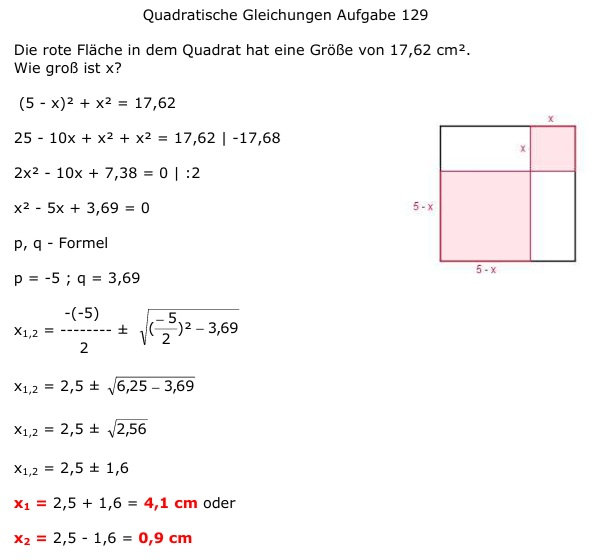
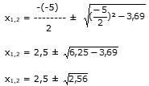

Aufgabe 129 Die rote Fläche in dem Quadrat hat eine Größe von 17,62 cm2. Wie groß ist x?  (5 - x)2 + x2 = 17,62 25 - 10x + x2 + x2 = 17,62 |-17,68 2x2 - 10x + 7,38 = 0 | :2 x2 - 5x + 3,69 = 0 p, q - Formel p = -5 ; q = 3,69  x1,2 = 2,5 ± 1,6 x1 = 2,5 + 1,6 = 4,1 cm oder x2 = 2,5 - 1,6 = 0,9 cm